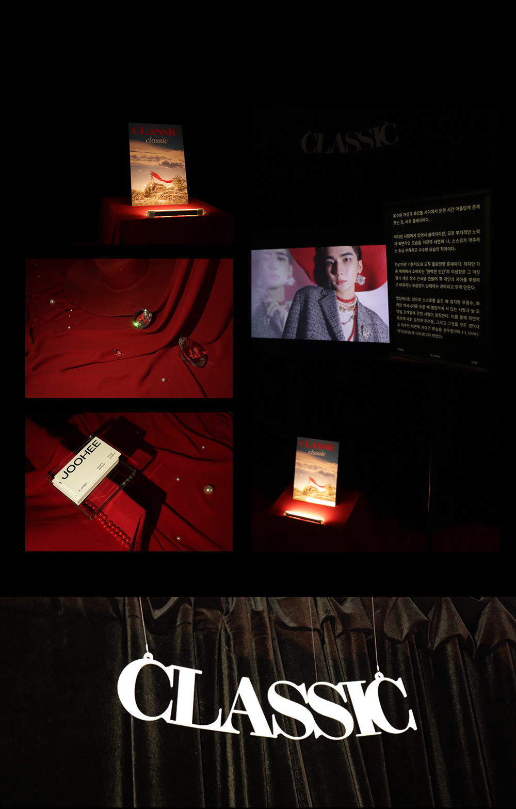

CLASSIC
무수한 거짓과 과장들 사이에서 오랜 시간 아름답게 존재하는 것, 바로 클래식이다.
이처럼 사람에게 있어서 클래식이란, 모든 부차적인 노력과 외면적인 모습들 이전의 내면의 나, 스스로가 마주하는 조금 부족하고 수수한 모습의 자아이다.
인간이란 기본적으로 모두 불완전한 존재이다. 하지만 각종 매체에서 소비되는 ‘완벽한 인간’의 이상향은 그 이상향과 개인 간의 간극을 만들어 각 개인의 자아를 부정하고 오직 비춰지는 모습만이 실재하는 자아라고 믿게 만든다.
영상에서는 천으로 스스로를 숨긴 채 정지한 무용수, 화려한 액세서리를 두른 채 불안하게 서 있는 사람과 늘 모바일 프레임에 갇힌 사람이 등장한다. 이를 통해 외면적 자아에 대한 집착과 두려움, 그리고 그것을 모두 견뎌내고 마주한 내면적 자아의 모습을 선우정아의 CLASSIC 뮤직비디오로 나타내고자 하였다.
박주희 qkrwngml0512@naver.com
